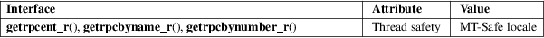

getrpcent_r, getrpcbyname_r, getrpcbynumber_r − get RPC entry (reentrant)
Standard C library (libc, −lc)
#include <netdb.h>
int
getrpcent_r(struct rpcent *result_buf,
char buf[.buflen],
size_t buflen, struct rpcent
**result);
int getrpcbyname_r(const char *name,
struct rpcent *result_buf, char
buf[.buflen],
size_t buflen, struct rpcent
**result);
int getrpcbynumber_r(int number,
struct rpcent *result_buf, char
buf[.buflen],
size_t buflen, struct rpcent
**result);
Feature Test Macro Requirements for glibc (see feature_test_macros(7)):
getrpcent_r(),
getrpcbyname_r(), getrpcbynumber_r():
Since glibc 2.19:
_DEFAULT_SOURCE
glibc 2.19 and earlier:
_BSD_SOURCE || _SVID_SOURCE
The getrpcent_r(), getrpcbyname_r(), and getrpcbynumber_r() functions are the reentrant equivalents of, respectively, getrpcent(3), getrpcbyname(3), and getrpcbynumber(3). They differ in the way that the rpcent structure is returned, and in the function calling signature and return value. This manual page describes just the differences from the nonreentrant functions.
Instead of returning a pointer to a statically allocated rpcent structure as the function result, these functions copy the structure into the location pointed to by result_buf.
The buf array is used to store the string fields pointed to by the returned rpcent structure. (The nonreentrant functions allocate these strings in static storage.) The size of this array is specified in buflen. If buf is too small, the call fails with the error ERANGE, and the caller must try again with a larger buffer. (A buffer of length 1024 bytes should be sufficient for most applications.)
If the function call successfully obtains an RPC record, then *result is set pointing to result_buf; otherwise, *result is set to NULL.
On success, these functions return 0. On error, they return one of the positive error numbers listed in ERRORS.
On error, record not found (getrpcbyname_r(), getrpcbynumber_r()), or end of input (getrpcent_r()) result is set to NULL.
|
ENOENT |
(getrpcent_r()) No more records in database. | ||
|
ERANGE |
buf is too small. Try again with a larger buffer (and increased buflen). |
For an explanation of the terms used in this section, see attributes(7).

Functions with similar names exist on some other systems, though typically with different calling signatures.
GNU.
getrpcent(3), rpc(5)